[N-World Contents] [Book Contents] [Prev] [Next] [Index]
Building a Mansion
In this chapter, you'll learn how to use some additional N-Geometry tools to build a building.
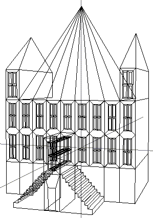
In this Chapter
You'll learn about the following topics:
Before You Begin
If you get lost while working on this tutorial, try re-starting it from the beginning. Eventually you'll make your way to the end and you'll have practiced everything many more times than if you'd done it perfectly the first time.
The Main Floor
1. (CLICK-L) on GeoMenus>File>New Object.
2. (CLICK-L) on cube.
- A cube appears in your N-Geometry window.
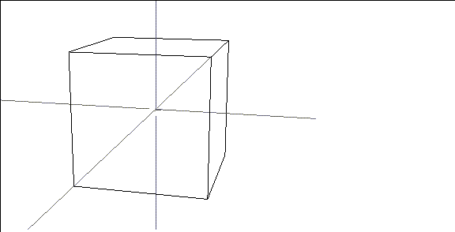
Figure 3.1 Start with a cube again
3. (CLICK-L) on bodies on the element sensitivity menu.
4. (SHIFT-L) on the cube.
- The modification menu for bodies appears.
5. (CLICK-L) on Free Scale.
- This operation scales axes independently around the midpoint of the object. Move your mouse to the left and right or up and down to scale the cube in the x and y directions. If you (HOLD-M) the cube also scales in z.
- Scale the object so that it is wider than it is deep, and not quite as tall as it was when you started; something like this:
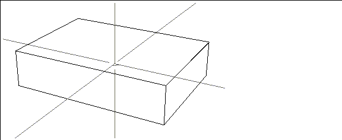
Figure 3.2 Free Scale the cube
6. (CLICK-R) on segments on the element sensitivity bar.
- Select the top and bottom segments of the front face.
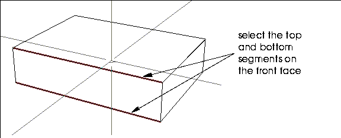
Figure 3.3 Select the segments to cut
Remember, (CLICK-R) or wave off the N-Geometry window to finish a collection and before performing any operation on the collection.
7. (SHIFT-L) on the collection, then (CTRL-M) on Cut.
- We used (CTRL-M) instead of (CLICK-L) because we want to specify additional parameters for the operation.
8. (CLICK-M) on the "Number of Segments" text edit box to clear it.
- Enter 9 for the target number of segments:
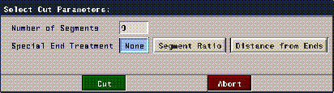
Figure 3.4 Cutting one segment into a number of shorter segments
9. (CLICK-L) on Cut.
- You have now divided both of the selected segments into 9 segments.
10. (CLICK-L) on faces on the element sensitivity bar.
11. (SHIFT-L) on the front face, then (CLICK-L) on Cut.
- When you move the cursor over the face, different vertices on the face are highlighted. N-Geometry is waiting for you to select a pair of vertices between which it should make a cut.
- (CLICK-L) on one vertex along the top edge, then its corresponding vertex on the bottom edge.
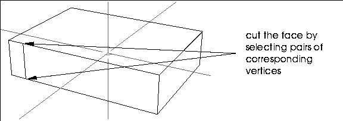
Figure 3.5 Front face cut once
- Repeat this procedure, cutting between each pair of vertices on the top and bottom edges of the front face. You may want to use the repeat key which will save you from having to select Cut from the menu 8 more times. Your object should look like this when you've made all the cuts:
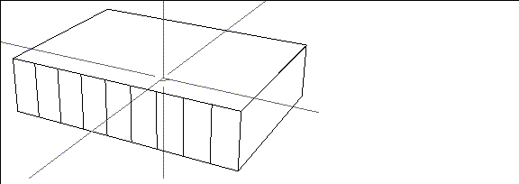
Figure 3.6 Front face cut nine times
12. Collect these nine front faces.
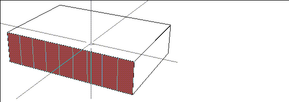
Figure 3.7 Collected faces
13. (SHIFT-L) on the collection, then (CLICK-L) on Inset.
- Use the default value of 2.0, then (CLICK-L) on the green Inset button.
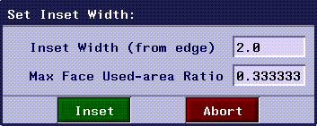
Figure 3.8 The Inset menu
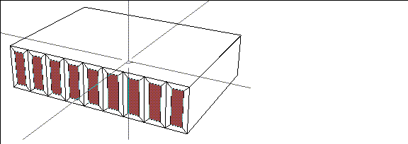
Figure 3.9 Inset the windows on the main floor
Notice that the Inset command creates a new face inside each of the collected faces. The new faces are now the ones currently selected.
14. (SHIFT-L) on the collection, then (CLICK-L) on Edge Subdivide.
15. (SHIFT-L) on the collection, then (CLICK-L) on Inset.
- This time change the Inset Width value from 2.0 to .5
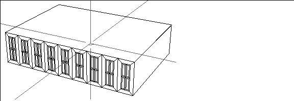
Figure 3.10 Insetting smaller faces on the windows
We can now use this "floor" as a building block to create the entire mansion.
Save your Work
It's time to save your work.
- Note. It's a good idea to save your work periodically, after you complete each logical step in a model.
16. (CLICK-L) on GeoMenus>File>Save.
17. (CLICK-L) on "Cube".
- In the Object Name box replace "Cube" with
"mansion-floor-module".
18. (CLICK-L) on the Write Object File button.
Creating a Second Story
Now we'll create an instant second story using the Mirror command.
19. (CLICK-L) on bodies on the element sensitivity menu.
20. (SHIFT-L) on the mansion, then (CLICK-L) on Mirror.
- N-Geometry goes into face select mode. As you move the cursor over the object, the face under the cursor is highlighted. N-Geometry is waiting for you to tell it which object it should mirror the object around.
21. (CLICK-L) on the top face of the first floor.
- This doubles the geometry of the object, mirroring it from the selected face. The resulting object is still a single object:
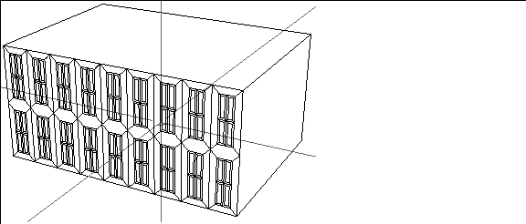
Figure 3.11 The mansion, now with a completed second floor
Pulling Down the Foundation
Now we can use Extrude to pull out the face on the bottom of the mansion to form a foundation.
22. (CLICK-L) on faces on the element sensitivity menu.
23. (SHIFT-L) on the face at the bottom of the mansion.
24. (CLICK-L) on Extrude and pull the ground floor down so it looks something like Figure 3.12:
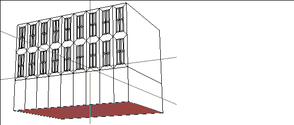
Figure 3.12 Pulling down the ground floor
The Roof
Now it's time for the roof. First, we'll pull up two side towers then the center of our mansion. The side towers will each be the width of one window unit.
Move your camera (CLICK-M) so that you are looking down at the top of the building:
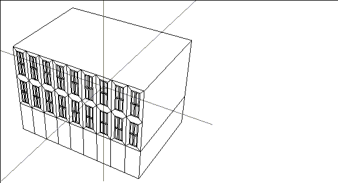
Figure 3.13 Modify your view so you're looking down at the mansion
25. (CLICK-L) on segments on the element sensitivity menu.
26. (SHIFT-L) on the back segment along the back of the roof.
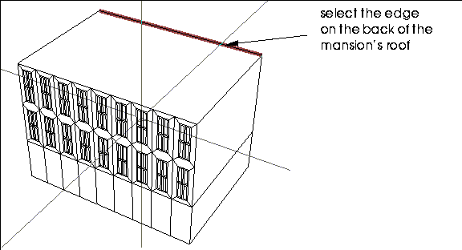
Figure 3.14 Selecting the element to cut
27. (CLICK-M) on Cut.
Now we`ll use the Flatten command to align one point with another in a selected plane.
28. (SHIFT-L) on the new point shown in Figure 3.15.
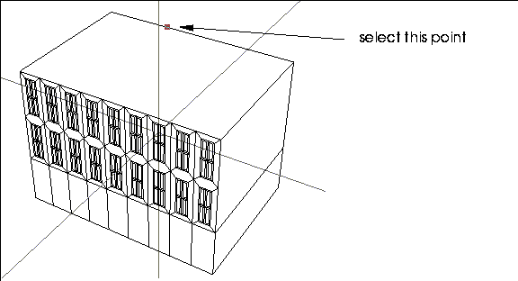
Figure 3.15 Select the element you want to move into a common plane with another element
29. (CLICK-L) on Flatten.
30. (CLICK-L) on X.
31. (CLICK-L) on the first point from the left along the front segment of the roof:
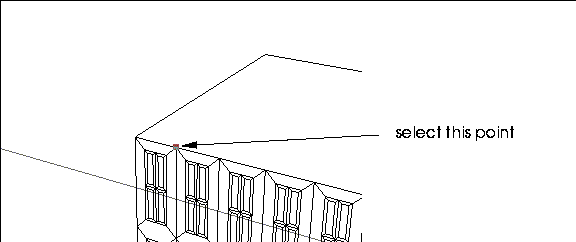
Figure 3.16 Select the element with which you want to align the first element
- The two points are now aligned in the x axis-if you move the mouse over the back edge of the roof, you'll see that the point has been moved, or "flattened" into the same plane as the vertex on the front edge of the roof:
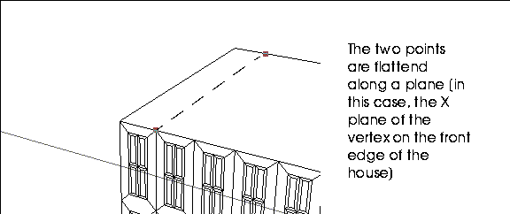
Figure 3.17 The two points are aligned with each other
Now do the same thing on the other side of the mansion:
32. (SHIFT-L) on the second new point along the back edge of the roof.
33. (CLICK-L) on Flatten.
- A list of axes appears.
34. (CLICK-L) on X.
35. (CLICK-L) on the second point from the right along the front edge of the mansion.
- Like the other pair of points, these two points are now "flattened" in the x axis.
Now we can cut out our roof to create two towers. We'll work on the left (-x) side of the mansion first.
36. (CLICK-L) on faces on the element sensitivity menu.
37. (SHIFT-L) on the top face.
38. (CLICK-L) on cut.
39. (CLICK-L) on the two points shown in Figure 3.17.
- Your roof should look like this:
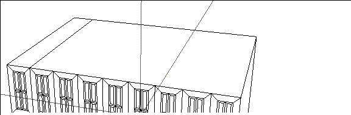
Figure 3.18 Cut the face between the two flattened points
Now repeat steps 36 through 38 for the two points on the right side of the roof:
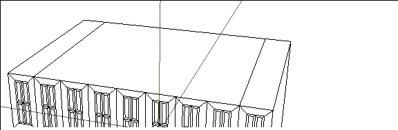
Figure 3.19 Make a similar cut on the other side
Now we'll extrude these new faces.
40. (CLICK-R) on faces on the element sensitivity menu.
41. (CLICK-L) on the two faces.
- Remember that if you are in collect mode you must (CLICK-R) or wave off the N-Geometry window to end an element collection before performing any operation. If you don't end the collection N-Geometry assumes you are still collecting.
42. (SHIFT-L) on the collection, then (CLICK-L) on Extrude.
- Move the mouse until your towers look like this:
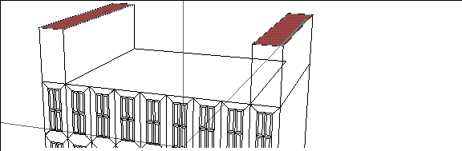
Figure 3.20 Pulling up the towers
Now we'll create some windows in the towers by repeating what we did earlier using Inset and Edge Subdivide.
43. (CLICK-L) on none to clear your current face collection.
- Collect the two front faces shown in Figure 3.21:
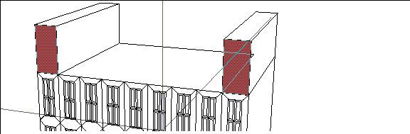
Figure 3.21 Selecting the faces you want to put the windows on
44. (SHIFT-L) on the collection, then (CLICK-L) on Inset.
- The Inset menu appears.
45. (CLICK-L) on the Inset button.
- Notice that Inset creates a new face inside the borders of the original face. You may want to scale the faces to match with the other windows.
46. (SHIFT-L) on the collection, then (CLICK-L) on Scale.
- Move the mouse to shrink and/or enlarge the selected faces so that they look "correct" for the building.
47. (SHIFT-L) on the collection, then (CLICK-L) on Edge Subdivide.
48. (SHIFT-L) on the collection, then (CLICK-L) on Inset.
- Change the Inset Width from 2.0 to .5.
49. (CLICK-L) on Inset (the green button).
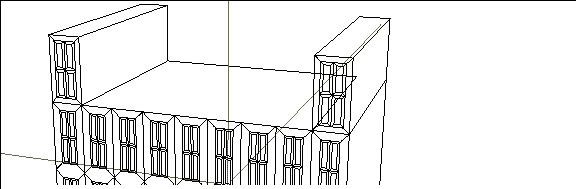
Figure 3.22 Windows added to the towers
Now let's create some peaks for the towers.
50. (CLICK-L) on none to deselect the faces.
51. (CLICK-R) on faces.
52. (CLICK-L) on the two tower roof tops, then (CLICK-R) to end your collection.
53. (SHIFT-L) on the collection, then (CLICK-L) on Vertex Subdivide.
- The top of your towers should look like this:
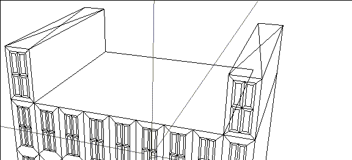
Figure 3.23 Creating a peak to pull up from the roof
54. (CLICK-R) on points on the element sensitivity menu.
55. (CLICK-L) on the two new points in the center of each tower roof, then (CLICK-R) to end the collection.
56. (SHIFT-L) on the collection, then (CLICK-M) on Axis Move.
- Choose the Y axis from the menu, then move your mouse so that the towers look something like this:
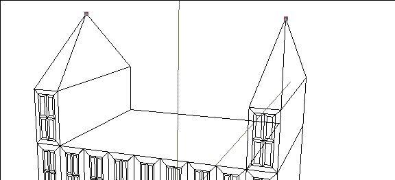
Figure 3.24 The Vertex Subdivide command makes it easy to pull out points from a square face
Now we will work on the roof top.
57. (SHIFT-L) on the face between the two towers.
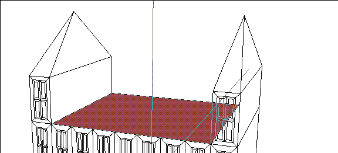
Figure 3.25 Select the face between the two towers
58. (CLICK-L) on Vertex Subdivide.
- Don't worry that there are more segments attached to the center from the front than from the back; we'll fix that in a minute.
59. (SHIFT-L) on the new center point.
60. (CLICK-M) on Axis Move.
61. (CLICK-L) on Y.
- Raise the center point over the towers.
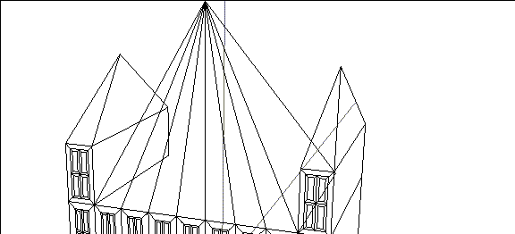
Figure 3.26 Completed roof
Now let's move the center point of our roof back along the z-axis
62. (CLICK-L) on the "y" hot key.
- This aligns the camera along the Y axis so that you're looking at the mansion from above:
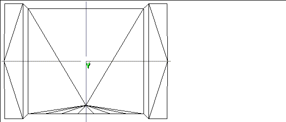
Figure 3.27 Top view of the mansion
63. (SHIFT-L) on the point, then (CLICK-M) on Axis Move and choose the Z axis.
- Move the mouse so that the point is over the global origin:
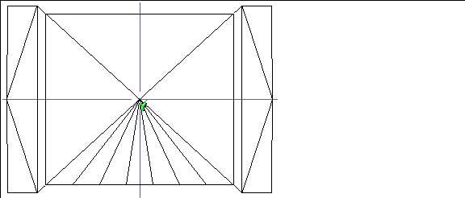
Figure 3.28 Move the peak of the roof over the roof's center
64. Press the "z" hot key to view your building from the front.
The Portico
We will now add a front foyer and staircase.
65. (CLICK-L) on segments on the element sensitivity menu.
66. (SHIFT-L) on the segment shown in Figure 3.29:
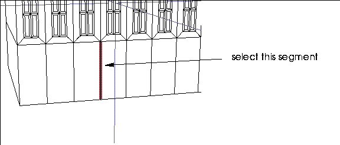
Figure 3.29 Front view of the mansion
67. (CLICK-L) on Dissolve.
- The Dissolve command removes segments from the object, while attempting to retain the object's geometric integrity.
Now we want to start out stairs by cutting the new, larger face we just created.
68. (SHIFT-L) on this face:
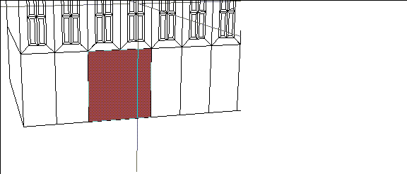
Figure 3.30 Choose the larger face created by the Dissolve operation
69. (CLICK-L) on Cut.
- Choose the bottom left and upper right vertices of the face to make a diagonal cut.
70. (CLICK-L) on segments on the element sensitivity menu.
71. (SHIFT-L) on the new segment.
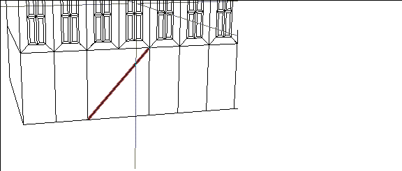
Figure 3.31 Choose the new segment
72. (CTRL-M) on Cut.
- Cut this segment into 21 smaller segments in the dialog box that appears.
73. (SHIFT-L) on the face above the middle window and cut it horizontally.
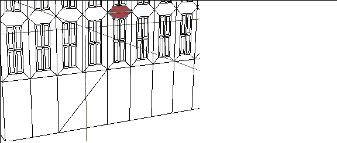
Figure 3.32 Cut the face over the door horizontally
Now you are going to collect a group of faces and extrude them the same distance. Up until now you've been collecting small collections.
Using the 2D Lasso
N-Geometry has a handy lasso tool which simplifies the creation of collections.
74. Press the "z" hot key.
- You should now be looking straight at the front of the building.
75. (CLICK-L) on faces on the element sensitivity menu.
76. Hold down the ALT key and (CLICK-L) on the N-Geometry window.
77. (HOLD-L) and drag a lasso around the faces shown in Figure 3.33:
- You'll notice that when you release the mouse button, you've been put automatically into collect mode.
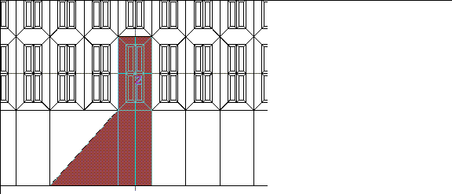
Figure 3.33 Collect the faces shown above using the 2D lasso tool
Next we'll Extrude the region of these faces.
78. (SHIFT-L) on the collection, then (CLICK-L) on Extrude Region.
- Extrude the collected faces out from the building, then reposition your camera for a better view:
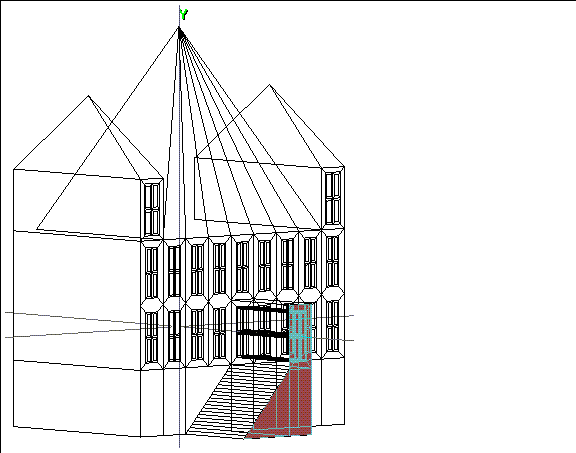
Figure 3.34 Extruding the portico
Creating Stairs
To create the stairs, first zoom in on that area with the camera.
79. Collect every other segment running along the z axis on the future staircase face.
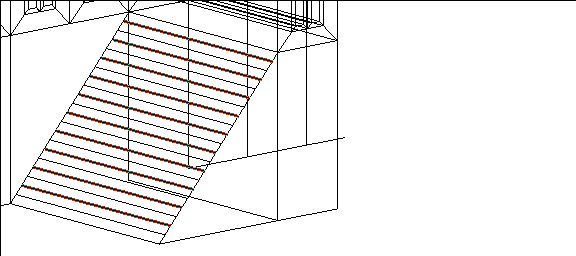
Figure 3.35 Select every other segment along the stairs
80. Press the "z" hot key.
- This aligns the camera along the Z axis.
81. (SHIFT-L) on the collection, then (CLICK-M) on Axis Move and choose the Y axis.
- This pulls the stairs up.
82. (CLICK-M) on Axis Move and choose the X axis.
- This pulls the stairs out.
Your stairs should now look something like this:
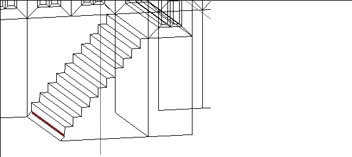
Figure 3.36 Stairs nearly complete
- Notice that the bottom step still needs a little work.
83. (SHIFT-L) on this segment, then (CLICK-L) on Dissolve.
84. (CLICK-L) on faces on the element sensitivity menu.
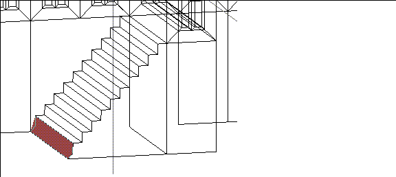
Figure 3.37 Select the face at the bottom of the stairs
85. (SHIFT-L) on the face at the bottom of the stairs, then (CLICK-L) on Flatten.
86. (CLICK-L) on X, then (CLICK-L) on the point at the bottom of the stairs.
- The face is flattened on the X axis:
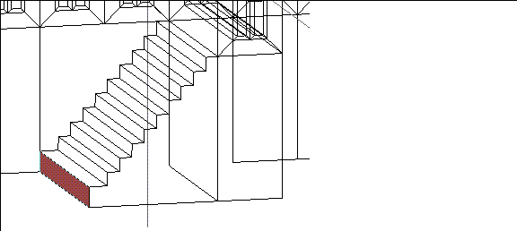
Figure 3.38 Flattened face
Create a Front Door
87. Press the "z" hot key.
88. (CLICK-L) on faces on the element sensitivity menu.
89. (SHIFT-L) on the face shown in Figure 3.39.
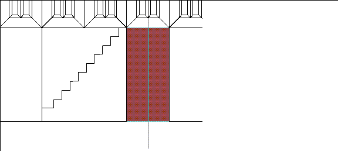
Figure 3.39 Building a door
90. (CLICK-L) on Inset.
- Use an Inset width of .5.
91. (SHIFT-L) on the face, then (CLICK-L) on Scale and scale the door down.
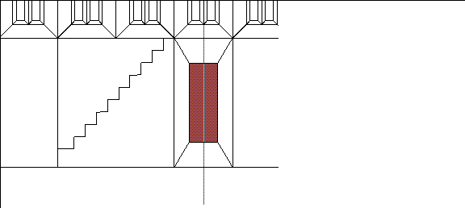
Figure 3.40 Scaling the inset door
92. (SHIFT-L) on the face, then (CLICK-M) on Axis Move.
93. (CLICK-L) on Y.
- Move the mouse to lower the door down to the ground.
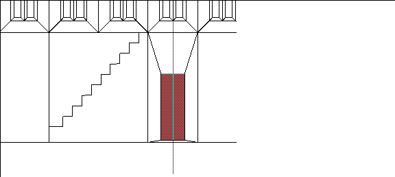
Figure 3.41 Moving the door down
Finishing the Mansion
Our staircase is a little lop-sided. A nice technique for duplicating the geometry on one side of an object to the other side is to use the Plane Cut command to slice the object in half, then use the Mirror around the created face.
- Note. It's a good idea to save your work before making a major modification like a plane cut.
94. Select bodies on the element sensitivity menu.
95. (SHIFT-L) on the mansion, then (CLICK-M) on Plane Cut.
96. (CLICK-L) in the data entry box for Plane Normal.
97. (CLICK-L) on X to plane cut the object along the X axis.
98. (CLICK-L) on Negative to keep the side of the Mansion containing the finished staircase.
99. (CLICK-L) on the green Truncate button.
- You should see something like this:
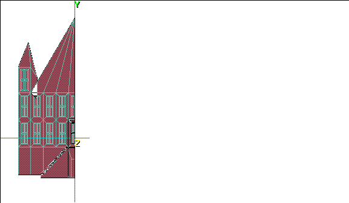
Figure 3.42 The mansion following the Plane Cut operation
100. (SHIFT-L) on the body, then (CLICK-L) on Mirror.
101. (CLICK-L) on the face created by the plane cut.
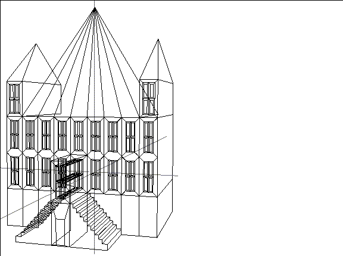
Figure 3.43 Completed mansion
Congratulations!
You've now created a basic structure. The tools you've learned to use here can be used to create other types of buildings and inorganic structures.
You've learned how to:
If you'd like, go ahead and add some more detail to your mansion before saving it off a final time.
[N-World Contents] [Book Contents] [Prev] [Next] [Index]
 Another fine product from Nichimen documentation!
Another fine product from Nichimen documentation!
Copyright © 1996, Nichimen Graphics Corporation. All rights
reserved.